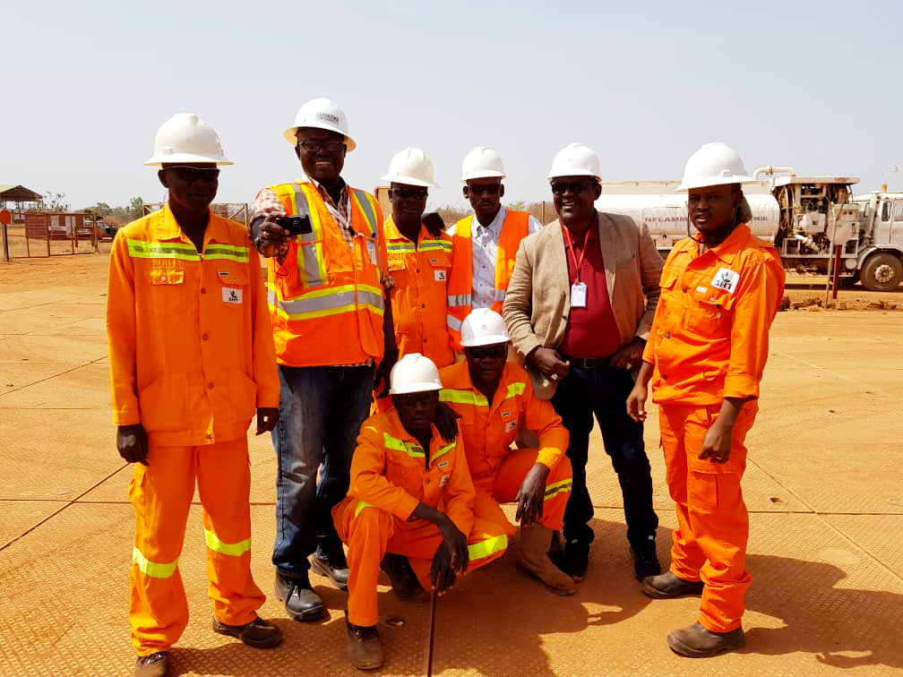
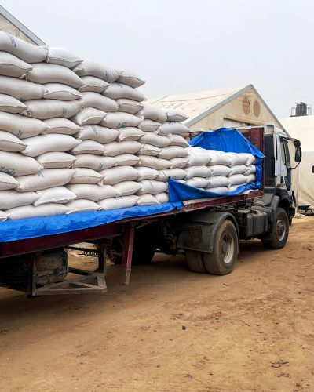
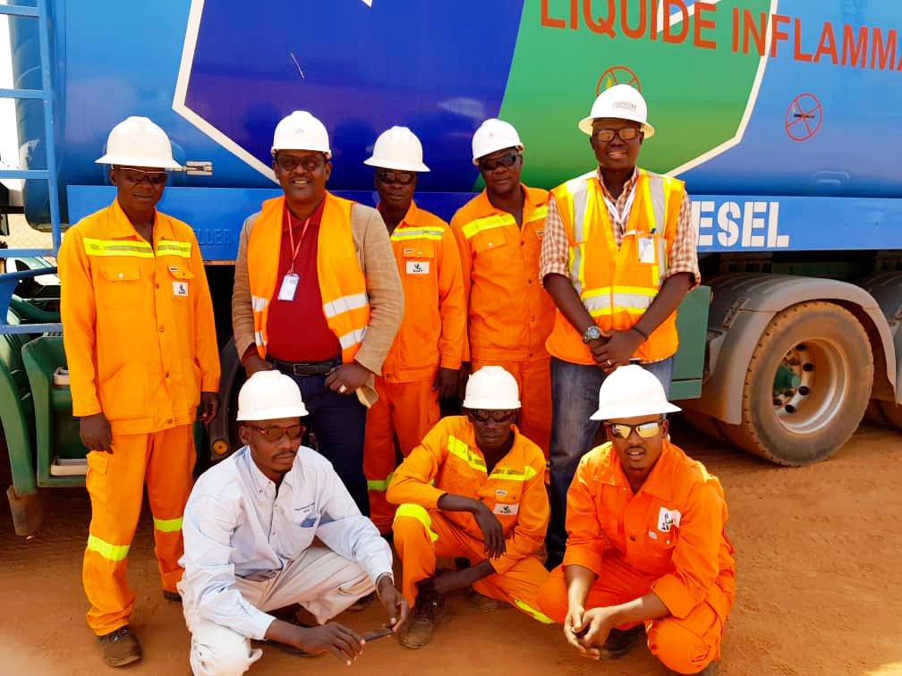
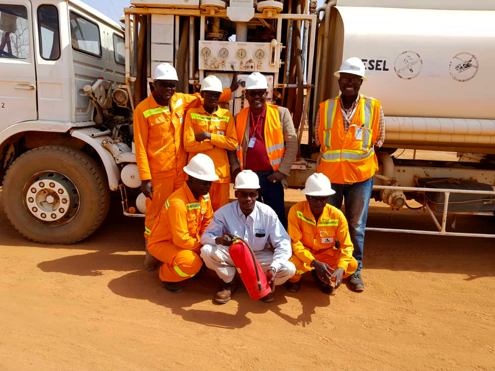
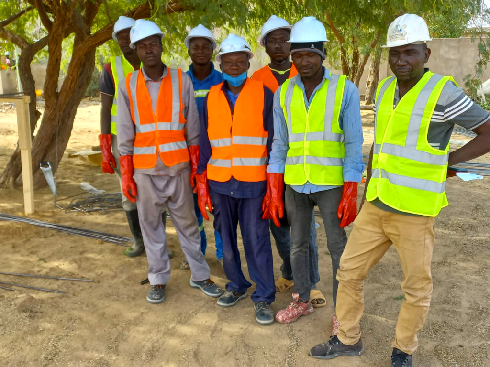
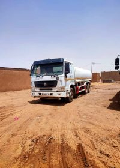

Génie CivilConstruction du complexe logistique de N'Djaména
Réalisation clé-en-main d'un entrepôt de 3 500 m² avec bureaux, quais de chargement et aire de stationnement pour poids lourds.
Découvrez quelques-uns de nos projets emblématiques réalisés au Tchad et dans la zone CEMAC.

Génie CivilRéalisation clé-en-main d'un entrepôt de 3 500 m² avec bureaux, quais de chargement et aire de stationnement pour poids lourds.
 Télécom
Télécom
Installation et mise en service de 45 tours BTS 4G sur l'ensemble du territoire tchadien pour un opérateur télécom national.
 Logistique
Logistique
Coordination logistique complète pour la distribution d'aide alimentaire dans 3 régions tchadiennes : transport, stockage et distribution finale.

AgrobusinessImport et distribution de 500 tonnes d'engrais et de semences certifiées pour 2 000 agriculteurs dans les régions du Chari-Baguirmi et du Logone.

Transit & DouaneDédouanement et transport de matériel pétrolier lourd (30+ convois spéciaux) pour une major internationale opérant dans le bassin du Lac Tchad.
.png) Génie Civil
Génie Civil
Réfection de 12 km de voiries urbaines avec pose de réseaux d'assainissement dans plusieurs quartiers de N'Djaména.

LogistiqueMise en place et gestion de la supply chain complète d'un groupe industriel opérant dans 4 pays de la zone CEMAC.

TélécomPose de 600 km de fibre optique souterraine reliant N'Djaména à Moundou pour le compte d'un opérateur télécom régional.

Import / ExportGestion complète de l'import de 15 000 tonnes de matériaux (ciment, acier, céramiques) depuis l'Asie et l'Europe pour un groupe tchadien de BTP.
Mais il pourrait l'être ! Contactez-nous pour discuter de vos besoins.
Discuter de votre projet